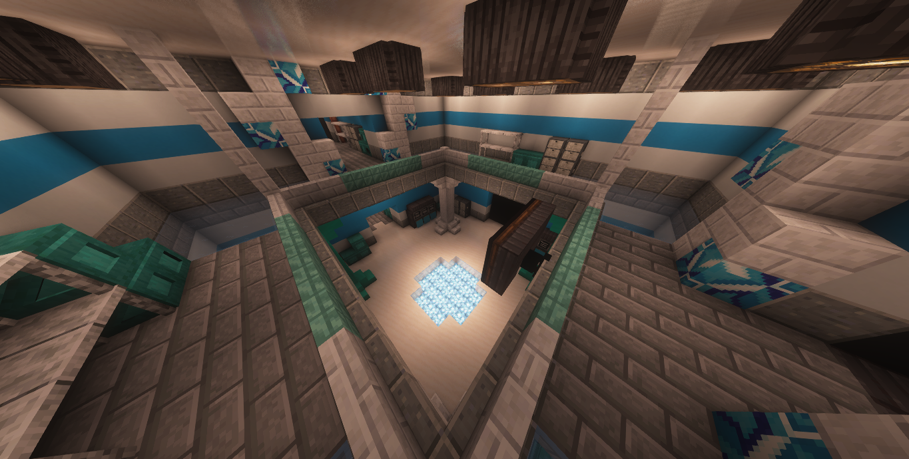

Departamento de Controle
Visão Geral
O Departamento de Controle é a principal força de resposta imediata da Anomaly Foundation Archives (A.F.A), sendo responsável pela supressão de anomalias hostis, coordenação das equipes de campo e organização das operações realizadas pela fundação.
Sempre que um incidente é registrado, os agentes do Departamento de Controle são os primeiros a serem mobilizados, atuando na estabilização da situação até a chegada das equipes especializadas ou até a completa neutralização da ameaça.
Funções
Além das operações de resposta rápida, o Departamento de Controle é responsável pela contenção e gerenciamento de anomalias classificadas como HE e WAW, níveis considerados de alto risco operacional.
Suas atribuições incluem:
- Supressão de anomalias hostis;
- Coordenação das equipes de campo;
- Planejamento de operações de contenção;
- Gerenciamento de protocolos de emergência;
- Organização estratégica das forças da A.F.A.
Devido à natureza de suas atividades, o departamento mantém comunicação constante com todas as demais divisões da fundação, funcionando como o principal centro operacional durante incidentes anômalos.
Fundação do Departamento
Originalmente, a A.F.A não possuía departamentos oficiais. Toda a estrutura operacional encontrava-se concentrada em um único complexo subterrâneo, onde pesquisadores, agentes e equipes de contenção trabalhavam de forma integrada.
Essa organização foi considerada suficiente até o Incidente de 1983, quando múltiplas anomalias escaparam de suas contenções simultaneamente em consequência de falhas humanas e da ausência de uma cadeia de comando especializada.
Como resposta direta ao ocorrido, foram oficialmente fundados o Departamento de Controle e o Departamento de Disciplina, estabelecendo uma divisão clara entre contenção operacional e manutenção da ordem interna da fundação.
Liderança — Angela
O Departamento de Controle é liderado por Angela, responsável pela coordenação geral das operações estratégicas da A.F.A.
Além de supervisionar diretamente os agentes sob seu comando, Angela atua como administradora de equipes pertencentes a outros departamentos sempre que uma operação conjunta é necessária, centralizando informações e redistribuindo recursos conforme a gravidade de cada incidente.
Grande parte dos protocolos de campo atualmente utilizados pela fundação foram desenvolvidos ou aperfeiçoados sob sua supervisão, tornando sua participação indispensável em operações envolvendo anomalias de grande escala.
Observações da A.F.A
O Departamento de Controle representa a primeira linha de defesa da fundação contra eventos anômalos. Sua atuação rápida e sua estrutura de comando são consideradas fatores essenciais para impedir que incidentes locais evoluam para ameaças de grande escala.
Nome: Angela
Idade: 44
Aniversário: 25/06
Gênero: Feminino
Cargo: Diretora de Controle
Trabalha na AFA desde:2002
Instalações do Departamento
